绑定UCON遥控器
当UCON遥控器开机后，遥控器屏幕应显示如下
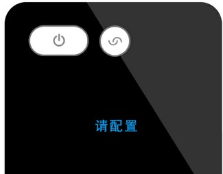遥控器绑定过程中，请保证UCON遥控器与处于手机蓝牙可连接范围内
打开手机APP，即可根据界面上的提示，通过蓝牙搜索到您的设备。
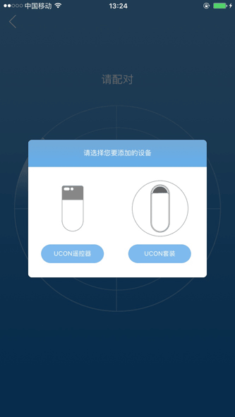系统搜索到设备后，可以为设备命名，保存后完成UCON遥控器与手机APP的绑定。
此时如显示绑定失败，请检查UCON遥控器是否在手机附近，如果仍提示失败，请重启手机蓝牙再次尝试
如果您购买的是UCON套装，请先将UCON底座接上电源，同时UCON遥控器处于开机状态，然后在APP中选择需要添加的设备为“UCON套装”。
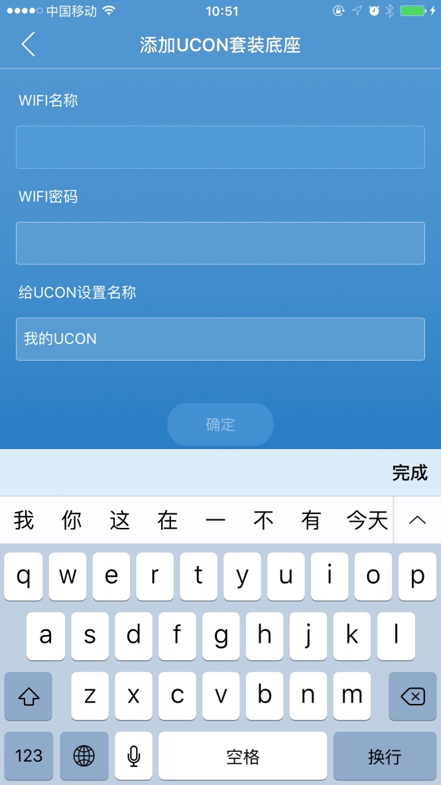系统搜索到UCON套装后，会自动找到手机连接的WiFi热点，此时需输入此热点的密码和设备名称，以完成UCON底座与手机APP的绑定。
请注意：UCON套装仅支持2.4GHz频段WiFi热点，不支持5GHz。此时如显示绑定失败，请检查WiFi热点是否可正常联网，并建议将UCON底座和遥控器靠近WiFi路由器，如果仍提示失败，请重启手机WiFi再次尝试。
完成UCON底座与手机APP的绑定后，可重复上一节步骤，完成UCON遥控器与手机APP的绑定。
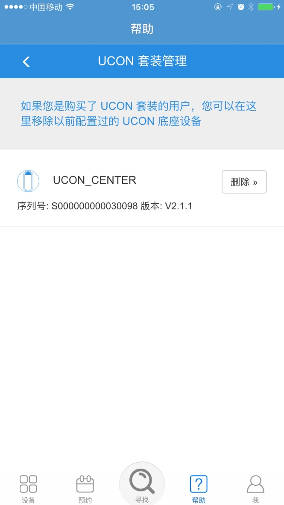后续可通过APP中的“帮助>>UCON套装管理”进行UCON底座版本查询或删除已绑定的底座。
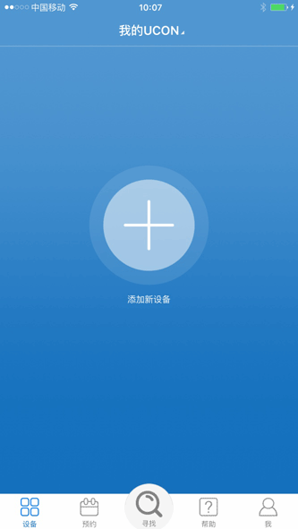以后遥控器开启或唤醒时，屏幕上会显示遥控器名称。
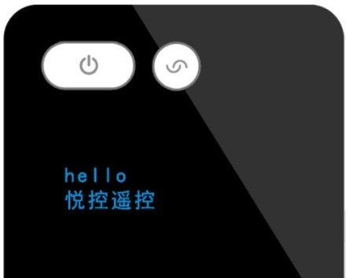配置UCON遥控器
UCON遥控器完成绑定后，遥控器屏幕应显示如下：
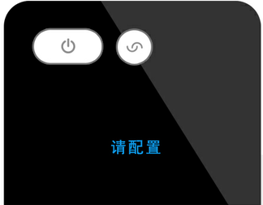遥控器配置过程中，请保证UCON遥控器与处于手机蓝牙可连接范围内
点击APP界面中央或者标题栏右侧的“+”，可以进入遥控器配置状态，此时遥控器屏幕应显示为：
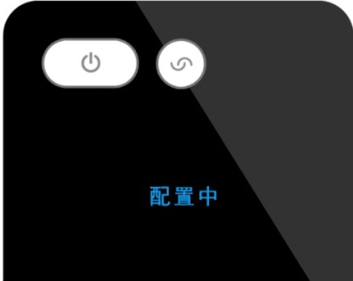配置遥控方式可以分为两种：
A. 下载家电控制码（无需原家电遥控器）
B. 学习遥控器红外码（需要原家电遥控器）
A-下载家电控制码
依次选择家电类型、家电品牌，可进入下载家电控制码
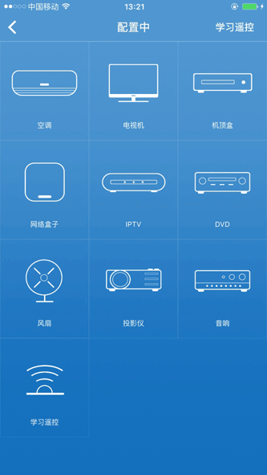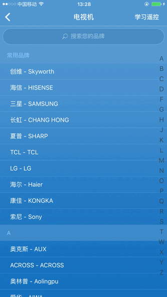
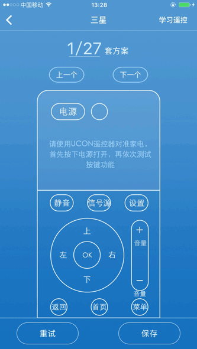
一个品牌下通常会包含若干个家电控制码，收到APP界面下载成功的提示后，请将UCON对准家电，根据APP页面提示的功能，依次测试对应的功能是否能够实现对家电的正确控制。
如果不能正确控制，请点击右下角箭头切换下一个控制码，直到可以正确控制
如果提示下载失败，请点击重试重新下载当前控制码
控制家电成功后，可以给当前家电命名及保存，在“我的家电”下，可以看到已经配置的成功的家电。
重复以上操作可以配置其他家电，UCON最多可以支持8个家电
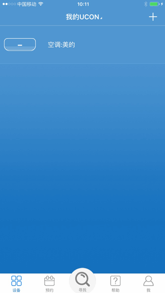如果您想要配置的家电类型or品牌不在列表内，或者多次下载控制码均无法正确控制，您可以尝试用“学习遥控器红外码”的方式完成遥控配置
B-学习遥控器红外码
进入配置模式后，选择APP右上角“学习模式”可以看到“学习遥控教程”。
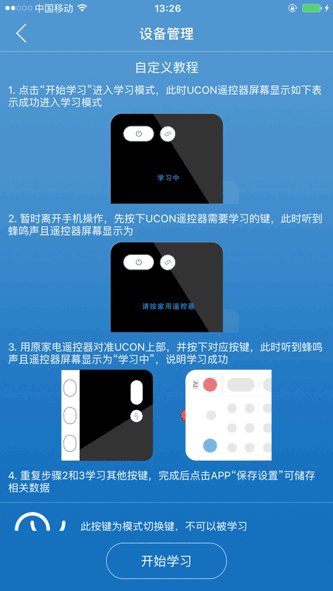点击下方“开始学习”可以将UCON遥控器激活为学习模式，根据“学习遥控教程”可完成配置。
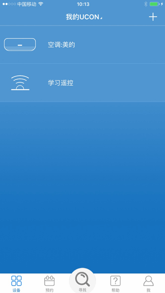理论上红外遥控器都可以被学习
由于空调红外码比较特殊，单个按键键不可以被学习，可以将空调当前状态（例如：开机+制冷+26C+高速）保存至UCON遥控器某一个按键中，学习流程不变，这样可以一键开启所需要的空调场景
查看与删除
点击“按键说明”查看通过下载控制码的家电的遥控按键。
点击“重新配置”可以对通过下载控制码的家电进行重新配置。
点击“重新学习”可以对通过学习的家电进行按键重新学习。
“删除”可以将已配置的遥控删除。
UCON遥控器与处于手机蓝牙可连接范围内才可删除遥控
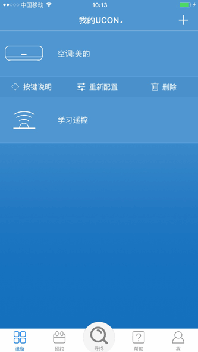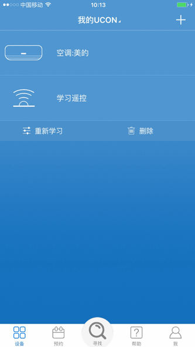
UCON遥控器设置
点击“我”的栏目，可以查看或更新APP版本，用微信账号登录，以及关注悦控公众账号获取更多信息。
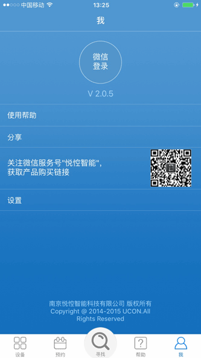进入设置栏目，可以进入系统设置界面，可以设置内容如下：
1. 为已经绑定的UCON设备重命名
2. 遥控器唤醒时是否显示欢迎语
3. 设置遥控器唤醒的灵敏度
4. 进入待机模式的时间
5. 查询固件版本
6. 删除当前遥控器
7. iOS APP用户还可以对遥控器进行固件升级
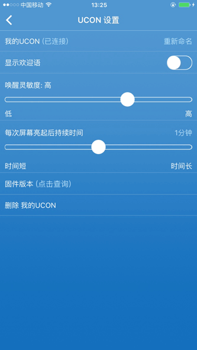遥控模式切换
如果您已成功配置了多个家电遥控器，在使用过程中可通过遥控器上的模式切换键 改变当前控制的家电。
改变当前控制的家电。